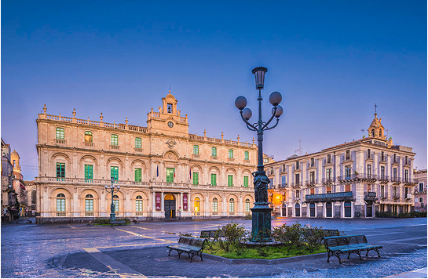
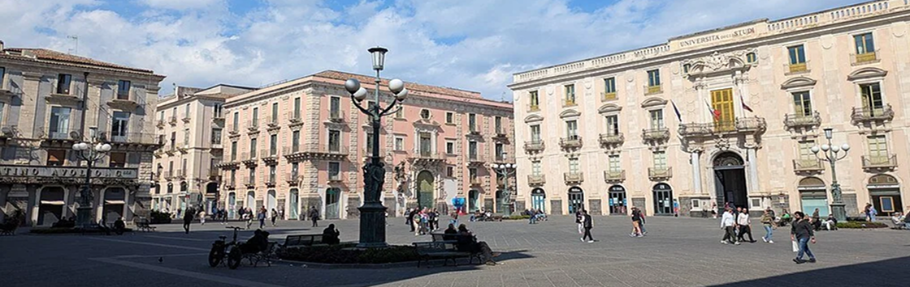
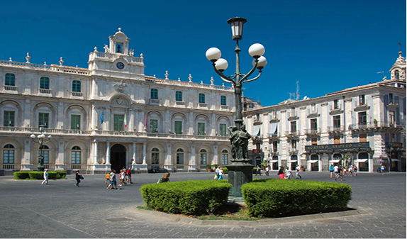
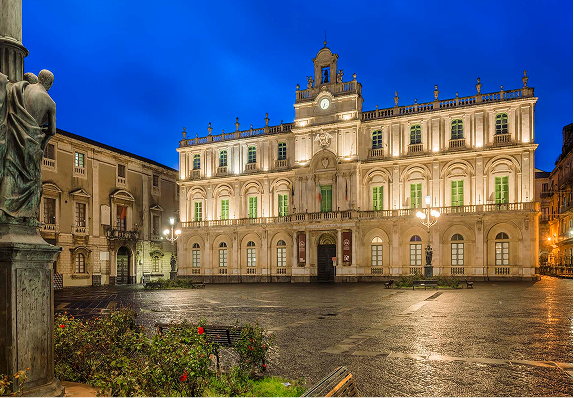

Gioiello barocco di Catania
Piazza dell’Università è una delle piazze più scenografiche del centro storico di Catania, situata lungo la vivace Via Etnea. La piazza, caratterizzata da un elegante pavimento in pietra lavica con lo stemma della città in rilievo, è un luogo di incontro che unisce arte, storia e vita urbana.
La piazza è circondata da alcuni dei palazzi più rappresentativi del barocco catanese: Il Palazzo dell’Università, che domina la piazza, il Palazzo San Giuliano e il Palazzo Gioeni Asmundo, che arricchiscono l’insieme architettonico di prestigio e testimoniano lo sviluppo culturale della città.

Arte, leggende e simboli della città
Un elemento che cattura l’attenzione nella piazza sono quattro particolari lampioni artistici in bronzo, realizzati nel 1957. Questi candelabri raffigurano scene di leggende siciliane, il Paladino, mito e identità culturale locale.
Piazza Università è un salotto urbano dove studenti, cittadini e visitatori si incontrano, passeggiano o si fermano nei caffè e nei locali della piazza.

Vita quotidiana e dinamismo
Oggi Piazza Università è molto più di un insieme di edifici storici: è un luogo vivo e frequentato da studenti, residenti e visitatori. Eventi culturali e manifestazioni contribuiscono a trasformarla in un vero e proprio “salotto urbano” di Catania.
Visitare Piazza Università significa immergersi nella storia e nella cultura di Catania: la bellezza architettonica, le leggende rappresentate dai lampioni e l’atmosfera vivace creano un’esperienza unica, capace di raccontare la città in ogni dettaglio.
